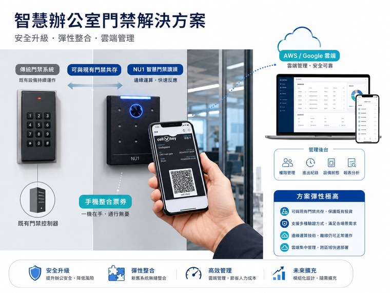
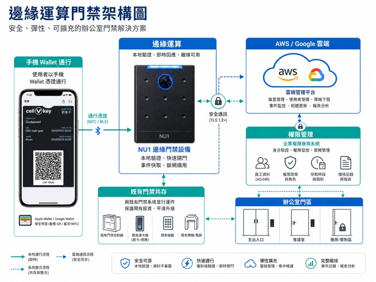

最近 asmag 整理了 mobile access control 的最新趨勢。文章裡有一個很重要的訊號：手機通行已經不再只是「很酷的新功能」，而是許多場域在更新門禁系統時會預設考慮的能力。
原文來源：asmag / Mobile access control: The latest trends shaping the technology。這篇不是逐字翻譯，而是從原文提到的 mobile access 趨勢，延伸整理成旅宿智慧入住、Wallet、QR Code、NFC 房卡與門禁權限管理的觀察。
但如果把它放回旅宿現場，就會發現這件事不能只理解成「以後大家都用手機開門」。旅客的裝置、年齡、入住型態、網路狀態與現場設備都不一樣；飯店也不可能一夕之間把所有門鎖、房卡、櫃台流程全部換掉。
所以真正值得看的是：mobile access 會如何和 Wallet、QR Code、NFC 房卡、PMS、Kiosk、發卡機與門禁設備一起共存。智慧入住的下一步，不是只押一種鑰匙，而是讓所有鑰匙都被同一套權限邏輯管理。
手機憑證正在從 nice-to-have 變成標配

過去談行動鑰匙，常常像是在介紹一個高級飯店才會有的亮點功能。旅客完成 check-in 後，不必到櫃台拿卡，手機靠近門鎖就能進房，體驗很漂亮。
但 asmag 這篇文章提到的趨勢更接近現實：mobile access 的討論正在從「要不要導入」變成「要多快標準化」。原因很簡單，手機已經是多數人每天用來付款、驗證身份、搭車與保存憑證的裝置。把門禁憑證放進手機，對使用者來說會越來越自然。
對旅宿來說，這代表行動通行會逐漸變成基本選項，而不是品牌宣傳才拿出來講的科技感。未來旅客看到自助入住時，會期待至少有手機憑證、QR Code 或 Wallet Pass 這類更輕的通行方式。
Wallet 支援讓「開門」更像日常動作
asmag 把 mobile wallet support 列為最新趨勢之一，特別提到 Apple Wallet、Google Wallet 這類使用者已經熟悉的入口。這點對旅宿很重要，因為旅客不一定想為了一次住宿下載新 App。
如果房卡或通行憑證能進到 Wallet，旅客的心理負擔會小很多。他不需要記得某個陌生 App 放在哪裡，只要像搭車、付款或出示票券一樣，把手機拿出來就好。
但 Wallet 不是萬靈丹。它牽涉裝置相容性、發卡成本、系統整合、憑證生命週期與門禁設備支援。對中小旅宿來說，最務實的路線不是一開始就追求所有憑證都進 Wallet，而是先把 PMS、Kiosk、QR Code、NFC 房卡與現場邊緣設備的權限邏輯整理好，再逐步把 Wallet 放進同一條流程。

身分驗證會變得更細，不只是「有卡就能進」
傳統房卡最大的弱點，是卡片本身不太會問「拿卡的人是不是本人」。卡片可能遺失、被轉交、被拿錯，也可能因為現場流程沒有同步而留下權限風險。
手機憑證的優勢，是它可以和裝置安全能力連在一起，例如 Face ID、Touch ID、系統安全元件、裝置鎖定與遠端撤銷。也就是說，通行憑證不只是放在手機裡，而是被手機原本的身份驗證機制保護著。
回到旅館場景，這會讓「入住身份」和「通行權限」更接近同一件事。旅客完成 pre check-in、付款與身份確認後，系統可以產生一組有時間、有房號、有區域限制的權限；現場 Kiosk 或門禁設備再確認這組權限是否有效。
實體與數位身份會融合：鑰匙不只開房門
asmag 也提到 physical and digital convergence，也就是實體通行與數位身份開始融合。這對旅宿尤其有想像空間，因為旅客在住宿期間需要的不是只有房門。
同一組權限可以延伸到電梯、公區、健身房、早餐、會議室、停車、訪客通行、會員優惠甚至延遲退房。旅客看到的是一張卡、一個 QR Code 或一個 Wallet Pass；系統看到的則是不同場景下的權限任務。
這也是為什麼前面幾篇我們一直談 PMS、Kiosk、發卡機與門禁設備要串成一條線。真正成熟的 mobile access，不應該只是把手機變成房卡，而是把「這位旅客在這段時間可以做什麼」整理成可執行、可撤回、可追蹤的權限。
雲端管理會增加，但旅宿現場仍需要邊緣驗證
mobile access 很適合用雲端管理，因為憑證可以遠端發放、更新、撤銷，也能同步不同據點的權限。對多館別、多樓層、多設備的營運者來說，這會大幅減少人工發卡與回收憑證的工作。
不過旅宿現場不能只靠雲端。旅客抵達時，如果大廳網路不穩、房門附近訊號不好，或設備短暫離線，旅客不能因此卡在門外。這就是 Cellbedell 一直強調邊緣運算的原因：雲端適合做管理與同步，現場設備適合做關鍵驗證與執行。
比較理想的架構，是旅客在手機或電腦上完成 pre check-in 與付款，系統先建立可用的金鑰或通行任務；旅客到現場後，Kiosk 或邊緣設備確認訂單與憑證狀態，再直接發放房卡、驗證 QR Code，或讓門禁設備依照本地權限完成判斷。

最後的答案不是全手機，而是多憑證共存
asmag 文章最後有一個很值得旅宿業記住的觀點：mobile access 的未來不是全部變成手機，而是走向 balanced mix。也就是手機憑證、實體卡、QR Code、RFID、PIN、Bluetooth、甚至生物辨識，會依照不同使用者與風險場景一起存在。
這其實很符合旅館現場。商務旅客可能喜歡手機快速通行；家庭旅客可能還是想拿房卡；短期訪客適合 QR Code；員工與房務可能需要不同權限；年長旅客或手機沒電的旅客，仍然需要櫃台可以接住。
所以旅宿導入 mobile access 時，不應該把問題簡化成「要不要淘汰房卡」。更好的問題是：我們能不能讓不同憑證共用同一套 PMS 資料、同一套權限邏輯、同一套現場驗證與同一套紀錄？
當這件事成立，旅客可以選擇最順手的通行方式，旅宿也能在背景裡管理身份、時間、房號與區域權限。這才是 mobile access 對智慧入住真正有價值的地方。
Editor’s Note
這篇文章不是 asmag 原文翻譯，而是以它整理的 mobile access control 趨勢為起點，延伸到旅宿智慧入住的現場設計。對 Cellbedell Blog 來說，重點不是追一個最炫的開門方式，而是理解「通行憑證」如何從一張房卡，變成旅客住宿期間的身份、權限與服務入口。
圖片使用 Cellbedell V4 智慧門禁行動通行方案素材與 demo 影片截圖；外部趨勢與技術背景請參考下方來源。